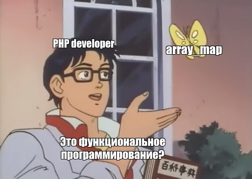
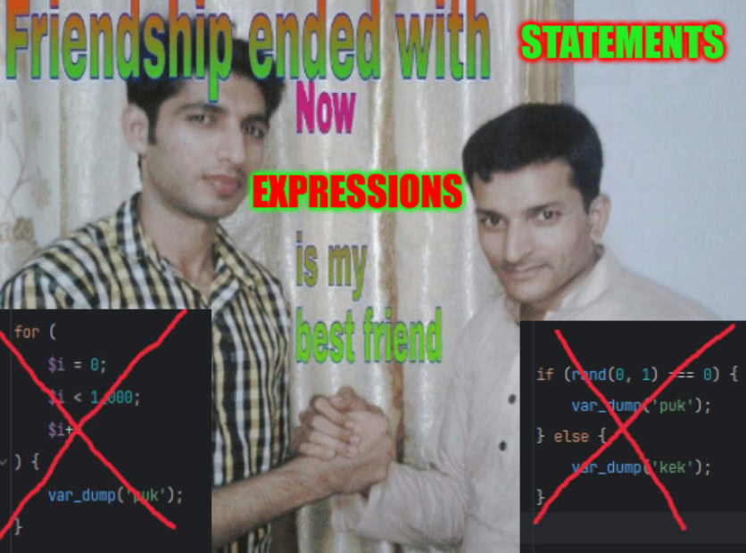

<!DOCTYPE html>
<html lang="en">
<head>
    <meta charset="utf-8" />
    <meta name="viewport" content="width=device-width, initial-scale=1.0, maximum-scale=1.0, user-scalable=no" />

    <title></title>
    <link rel="stylesheet" href="dist/reset.css">
    <link rel="stylesheet" href="dist/reveal.css" />
    <link rel="stylesheet" href="css/slides-extended.css" />
    <link rel="stylesheet" href="dist/theme/sky.css" id="theme" />
    <link rel="stylesheet" href="plugin/highlight/vs2015.css" />
    <link rel="stylesheet" href="plugin/customcontrols/style.css">


    <script defer src="dist/fontawesome/all.min.js"></script>

    <script type="text/javascript">
        function pageInIframe() {
            return (window.location !== window.parent.location);
        }

        let forgetPop = true;
        function onPopState(event) {
            if(forgetPop){
                forgetPop = false;
            } else if( pageInIframe()) {
                parent.postMessage(event.target.location.href, "app://obsidian.md");
            }
        }
        window.onpopstate = onPopState;
        window.onmessage = event => {
            if(event.data == "reload"){
                window.document.location.reload();
            }
            forgetPop = true;
        }

        function fitElements() {
            const itemsToFit = document.getElementsByClassName('fitText');
            for (const item in itemsToFit) {
                if (Object.hasOwnProperty.call(itemsToFit, item)) {
                    const element = itemsToFit[item];
                    fitElement(element, 1, 1000);
                    element.classList.remove('fitText');
                }
            }
        }

        function fitElement(element, start, end) {

            let size = (end + start) / 2;
            element.style.fontSize = `${size}px`;

            if (Math.abs(start - end) < 1) {
                while (element.scrollHeight > element.offsetHeight) {
                    size--;
                    element.style.fontSize = `${size}px`;
                }
                return;
            }

            if (element.scrollHeight > element.offsetHeight) {
                fitElement(element, start, size);
            } else {
                fitElement(element, size, end);
            }
        }


        document.onreadystatechange = () => {
            fitElements();
            if (document.readyState === 'complete') {
                if (pageInIframe() && window.location.href.indexOf("?export") != -1){
                    parent.postMessage(event.target.location.href, "app://obsidian.md");
                }
                if (window.location.href.indexOf("print-pdf") != -1){
                    let stateCheck = setInterval(() => {
                        clearInterval(stateCheck);
                        window.print();
                    }, 250);
                }
            }
        };
    </script>
</head>

<body>
    <div class="reveal">
        <div class="slides"><section  data-markdown><script type="text/template"><!-- .slide: class="drop" data-background-image="./title.jpg" template="" -->
<div class="" style="position: absolute; left: 0px; top: 0px; height: 900px; width: 960px; min-height: 900px; display: flex; flex-direction: column; align-items: center; justify-content: center" absolute="true">


</div></script></section><section  data-markdown><script type="text/template"><!-- .slide: class="drop" template="" -->
<div class="" style="position: absolute; left: 0px; top: 0px; height: 900px; width: 960px; min-height: 900px; display: flex; flex-direction: column; align-items: center; justify-content: center" absolute="true">

### Что такое функциональное программирование?


</div></script></section><section  data-markdown><script type="text/template"><!-- .slide: class="drop" template="" -->
<div class="" style="position: absolute; left: 0px; top: 0px; height: 900px; width: 960px; min-height: 900px; display: flex; flex-direction: column; align-items: center; justify-content: center" absolute="true">

Функциональное программирование — это набор выражений, который нужно каким-то образом интерпретировать
</div></script></section><section  data-markdown><script type="text/template"><!-- .slide: class="drop" template="" -->
<div class="" style="position: absolute; left: 0px; top: 0px; height: 900px; width: 960px; min-height: 900px; display: flex; flex-direction: column; align-items: center; justify-content: center" absolute="true">

### Установки функциональных языков

- Ссылочная прозрачность
- Неизменяемые данные
- Expressions вместо statements
- Данные и функции отдельно
- Композиция
- Контроль эффектов
- Статическая типизация
</div></script></section><section  data-markdown><script type="text/template"><!-- .slide: class="drop" template="" -->
<div class="" style="position: absolute; left: 0px; top: 0px; height: 900px; width: 960px; min-height: 900px; display: flex; flex-direction: column; align-items: center; justify-content: center" absolute="true">

### Ссылочная прозрачность

Замена одного выражения другим без какого-либо изменения результата
</div></script></section><section  data-markdown><script type="text/template"><!-- .slide: class="drop" template="" -->
<div class="" style="position: absolute; left: 0px; top: 0px; height: 900px; width: 960px; min-height: 900px; display: flex; flex-direction: column; align-items: center; justify-content: center" absolute="true">

#### Императивная программа

```php [|1,5,9|3,7,10|2,6,14]
function lhs(): int {
  log('lhs() call');
  return 1;
}
function rhs(): int {
  log('rhs() call');
  return 41;
}
function app(): int {
  return lhs() + rhs();
}

$result = app();
log($result);
```

```txt
[log]: lhs() call
[log]: rhs() call
[log]: 42
```
<!-- .element: class="fragment" -->
</div></script></section><section  data-markdown><script type="text/template"><!-- .slide: class="drop" template="" -->
<div class="" style="position: absolute; left: 0px; top: 0px; height: 900px; width: 960px; min-height: 900px; display: flex; flex-direction: column; align-items: center; justify-content: center" absolute="true">

#### Подстановка результата операций может менять смысл

```php
function app(): int {
	return 1 + 41;
}

log(app())
```


```txt
[log]: calculate
[log]: 42
```
</div></script></section><section  data-markdown><script type="text/template"><!-- .slide: class="drop" template="" -->
<div class="" style="position: absolute; left: 0px; top: 0px; height: 900px; width: 960px; min-height: 900px; display: flex; flex-direction: column; align-items: center; justify-content: center" absolute="true">

Результат функции с побочными эффектами невозможно инлайнить
</div></script></section><section  data-markdown><script type="text/template"><!-- .slide: class="drop" template="" -->
<div class="" style="position: absolute; left: 0px; top: 0px; height: 900px; width: 960px; min-height: 900px; display: flex; flex-direction: column; align-items: center; justify-content: center" absolute="true">

#### Ссылочно прозрачная альтернатива

```php [|2,5|9|10|11]
function lhs(): Expr<int> {
    return Expr::log('call lhs()')->map(fn() => 1);
}
function rhs(): Expr<int> {
    return Expr::log('call rhs()')->map(fn() => 41);
}

function app(): Expr<int> {
    return Exp::scope()
	  ->bind(a: lhs(), b: rhs())
	  ->map(fn($i) => $i->a + $i->b);
}
```
</div></script></section><section  data-markdown><script type="text/template"><!-- .slide: class="drop" template="" -->
<div class="" style="position: absolute; left: 0px; top: 0px; height: 900px; width: 960px; min-height: 900px; display: flex; flex-direction: column; align-items: center; justify-content: center" absolute="true">

#### Запуск программы (на краю света)

```php []
unsafeRun(
	expr: app()->flatMap(Expr::log(...)),
	interpreter: new ExprInterpreter(),
);
```
</div></script></section><section  data-markdown><script type="text/template"><!-- .slide: class="drop" template="" -->
<div class="" style="position: absolute; left: 0px; top: 0px; height: 900px; width: 960px; min-height: 900px; display: flex; flex-direction: column; align-items: center; justify-content: center" absolute="true">

#### Возможность инлайнить результат функции

```php []
$app = Expr::scope()
	->bind(
		a: Expr::log('call lhs()')->map(fn() => 1),
		b: Expr::log('call rhs()')->map(fn() => 41),
	)
	->map(fn($i) => $i->a + $i->b)
	->flatMap(Expr::log(...))

unsafeRun($app, new ExprInterpreter());
```
</div></script></section><section  data-markdown><script type="text/template"><!-- .slide: class="drop" template="" -->
<div class="" style="position: absolute; left: 0px; top: 0px; height: 900px; width: 960px; min-height: 900px; display: flex; flex-direction: column; align-items: center; justify-content: center" absolute="true">

### Неизменяемые данные

Все данные заморожены 🥶

Они никогда не будут изменены!
</div></script></section><section  data-markdown><script type="text/template"><!-- .slide: class="drop" template="" -->
<div class="" style="position: absolute; left: 0px; top: 0px; height: 900px; width: 960px; min-height: 900px; display: flex; flex-direction: column; align-items: center; justify-content: center" absolute="true">

В PHP это не по умолчанию

*И без гарантий на неизменяемость...*
<!-- .element: class="fragment" -->
</div></script></section><section  data-markdown><script type="text/template"><!-- .slide: class="drop" template="" -->
<div class="" style="position: absolute; left: 0px; top: 0px; height: 900px; width: 960px; min-height: 900px; display: flex; flex-direction: column; align-items: center; justify-content: center" absolute="true">

#### Однажды создан и не может быть изменен ✅

```php
final readonly class Person
{
	public function __construct(
		public int $id,
		public string $name,
	) {}
}
```
</div></script></section><section  data-markdown><script type="text/template"><!-- .slide: class="drop" template="" -->
<div class="" style="position: absolute; left: 0px; top: 0px; height: 900px; width: 960px; min-height: 900px; display: flex; flex-direction: column; align-items: center; justify-content: center" absolute="true">

#### Изменяемый класс❗️
```php
final class Address
{
	public function __construct(
		public string $street,
	) {}
}
```
</div></script></section><section  data-markdown><script type="text/template"><!-- .slide: class="drop" template="" -->
<div class="" style="position: absolute; left: 0px; top: 0px; height: 900px; width: 960px; min-height: 900px; display: flex; flex-direction: column; align-items: center; justify-content: center" absolute="true">

#### Могут быть ссылки на изменяемые объекты

```php [6]
final readonly class Person
{
	public function __construct(
		public int $id,
		public string $name,
		public Address $address,
	) {}
}
```
</div></script></section><section  data-markdown><script type="text/template"><!-- .slide: class="drop" template="" -->
<div class="" style="position: absolute; left: 0px; top: 0px; height: 900px; width: 960px; min-height: 900px; display: flex; flex-direction: column; align-items: center; justify-content: center" absolute="true">

С readonly в PHP есть более неприятный момент

*Это копирование readonly объектов...*
<!-- .element: class="fragment" -->
</div></script></section><section  data-markdown><script type="text/template"><!-- .slide: class="drop" template="" -->
<div class="" style="position: absolute; left: 0px; top: 0px; height: 900px; width: 960px; min-height: 900px; display: flex; flex-direction: column; align-items: center; justify-content: center" absolute="true">

#### Это не будет работать ❌

```php
final readonly class Person
{
	public function __construct(
		public int $id,
		public string $name,
	) {}
}

$a = new Person(id: 42, name: 'test');
$b = clone $a;
$b->name = 'NewName';
// Error: Cannot modify readonly property Person::$name
```
</div></script></section><section  data-markdown><script type="text/template"><!-- .slide: class="drop" template="" -->
<div class="" style="position: absolute; left: 0px; top: 0px; height: 900px; width: 960px; min-height: 900px; display: flex; flex-direction: column; align-items: center; justify-content: center" absolute="true">

#### "Рабочий" вариант на текущий момент 

```php [|10]
final readonly class Person
{
	public function __construct(
		public int $id,
		public string $name,
	) {}
}

$a = new Person(id: 42, name: 'test');
$b = new Person(id: $a->id, name: 'newName');
```

*Копируем все свойства вручную...*
<!-- .element: class="fragment" -->
</div></script></section><section  data-markdown><script type="text/template"><!-- .slide: class="drop" template="" -->
<div class="" style="position: absolute; left: 0px; top: 0px; height: 900px; width: 960px; min-height: 900px; display: flex; flex-direction: column; align-items: center; justify-content: center" absolute="true">

Есть пару rfc которые могут это исправить

https://wiki.php.net/rfc/clone_with
https://wiki.php.net/rfc/records
</div></script></section><section  data-markdown><script type="text/template"><!-- .slide: class="drop" template="" -->
<div class="" style="position: absolute; left: 0px; top: 0px; height: 900px; width: 960px; min-height: 900px; display: flex; flex-direction: column; align-items: center; justify-content: center" absolute="true">

#### Пустяки на бесконечном пути бытия


</div></script></section><section  data-markdown><script type="text/template"><!-- .slide: class="drop" template="" -->
<div class="" style="position: absolute; left: 0px; top: 0px; height: 900px; width: 960px; min-height: 900px; display: flex; flex-direction: column; align-items: center; justify-content: center" absolute="true">

#### Отсутвие незменяемых структур данных

- Нет в PHP core
- Нет библиотек
</div></script></section><section  data-markdown><script type="text/template"><!-- .slide: class="drop" template="" -->
<div class="" style="position: absolute; left: 0px; top: 0px; height: 900px; width: 960px; min-height: 900px; display: flex; flex-direction: column; align-items: center; justify-content: center" absolute="true">

#### Простой неизменяемый список

```scala 3 []
enum Lst[+A]:  
  case Cons(head: A, tail: Lst[A]) extends Lst[A]  
  case Nil extends Lst[Nothing]
```
</div></script></section><section  data-markdown><script type="text/template"><!-- .slide: class="drop" template="" -->
<div class="" style="position: absolute; left: 0px; top: 0px; height: 900px; width: 960px; min-height: 900px; display: flex; flex-direction: column; align-items: center; justify-content: center" absolute="true">

#### Все версии списка доступны

```scala 3
val v1 = Lst.Cons(1, Lst.Nil) // [1]
val v2 = Lst.Cons(2, v1)      // [1, 2]
val v3 = Lst.Cons(3, v2)      // [1, 2, 3]
val v4 = Lst.Cons(4, v3)      // [1, 2, 3, 4]
val v5 = Lst.Cons(5, v4)      // [1, 2, 3, 4, 5]
val v6 = Lst.Cons(6, v5)      // [1, 2, 3, 4, 5, 6]
```
</div></script></section><section  data-markdown><script type="text/template"><!-- .slide: class="drop" template="" -->
<div class="" style="position: absolute; left: 0px; top: 0px; height: 900px; width: 960px; min-height: 900px; display: flex; flex-direction: column; align-items: center; justify-content: center" absolute="true">

#### Давайте сделаем это на php

[Вот в javascript есть](https://github.com/immutable-js/immutable-js)
</div></script></section><section  data-markdown><script type="text/template"><!-- .slide: class="drop" template="" -->
<div class="" style="position: absolute; left: 0px; top: 0px; height: 900px; width: 960px; min-height: 900px; display: flex; flex-direction: column; align-items: center; justify-content: center" absolute="true">

PHP погибает с segfult при глубогой вложенности объектов 🤡


https://github.com/php/doc-en/issues/1228
</div></script></section><section  data-markdown><script type="text/template"><!-- .slide: class="drop" template="" -->
<div class="" style="position: absolute; left: 0px; top: 0px; height: 900px; width: 960px; min-height: 900px; display: flex; flex-direction: column; align-items: center; justify-content: center" absolute="true">

### Циклы и ветвления забанены


</div></script></section><section  data-markdown><script type="text/template"><!-- .slide: class="drop" template="" -->
<div class="" style="position: absolute; left: 0px; top: 0px; height: 900px; width: 960px; min-height: 900px; display: flex; flex-direction: column; align-items: center; justify-content: center" absolute="true">

#### Старые друзья VS новые

- for/while/continue/break - рекурсия
- if/else/switch - pattern matching
- return - просто не нужен
</div></script></section><section  data-markdown><script type="text/template"><!-- .slide: class="drop" template="" -->
<div class="" style="position: absolute; left: 0px; top: 0px; height: 900px; width: 960px; min-height: 900px; display: flex; flex-direction: column; align-items: center; justify-content: center" absolute="true">

#### Ну как там с рекурсией?


</div></script></section><section  data-markdown><script type="text/template"><!-- .slide: class="drop" template="" -->
<div class="" style="position: absolute; left: 0px; top: 0px; height: 900px; width: 960px; min-height: 900px; display: flex; flex-direction: column; align-items: center; justify-content: center" absolute="true">

```php [|2-3|4]
function sum(list<int> $nums): int {  
    return $nums === []
        ? 0
        : $nums[0] + sum(array_slice($nums, offset: 1));
}
```
</div></script></section><section  data-markdown><script type="text/template"><!-- .slide: class="drop" template="" -->
<div class="" style="position: absolute; left: 0px; top: 0px; height: 900px; width: 960px; min-height: 900px; display: flex; flex-direction: column; align-items: center; justify-content: center" absolute="true">

#### Причины из-за которых рекурсия это больно

- Stack-frame на каждый рекурсивный вызов
- Жалобы xdebug на большую вложенность
- Segfault (если вам очень сильно повезет)
</div></script></section><section  data-markdown><script type="text/template"><!-- .slide: class="drop" template="" -->
<div class="" style="position: absolute; left: 0px; top: 0px; height: 900px; width: 960px; min-height: 900px; display: flex; flex-direction: column; align-items: center; justify-content: center" absolute="true">

#### Хвостовая рекурсия

Частный случай рекурсии, при котором рекурсивный вызов является последней операцией перед возвратом из функции

*Оптимизируется в цикл*
<!-- .element: class="fragment" -->

*Не реализованно в PHP*
<!-- .element: class="fragment" -->
</div></script></section><section  data-markdown><script type="text/template"><!-- .slide: class="drop" template="" -->
<div class="" style="position: absolute; left: 0px; top: 0px; height: 900px; width: 960px; min-height: 900px; display: flex; flex-direction: column; align-items: center; justify-content: center" absolute="true">

#### Пример хвостовой рекурсии

```scala 3 [|1|3|4-5|6|2|8]
def sum(nums: List[Int]): Int =  
  @tailrec  
  def loop(nums: List[Int], acc: Int = 0): Int =  
    if nums.isEmpty  
    then acc  
    else loop(nums.tail, acc + nums.head)  
  
  loop(nums)
```
</div></script></section><section  data-markdown><script type="text/template"><!-- .slide: class="drop" template="" -->
<div class="" style="position: absolute; left: 0px; top: 0px; height: 900px; width: 960px; min-height: 900px; display: flex; flex-direction: column; align-items: center; justify-content: center" absolute="true">

#### Свертка

Если у вас получается сделать хвостовую рекурсию, то получится сделать свертку

```php [|3|4|6]
function sum(list<int> $nums): int
{
	$initial = 0;
	$reducer = fn (int $sum, int $num) => $sum + $num;

    return array_reduce($nums, $reducer, $initial);
}
```
</div></script></section><section  data-markdown><script type="text/template"><!-- .slide: class="drop" template="" -->
<div class="" style="position: absolute; left: 0px; top: 0px; height: 900px; width: 960px; min-height: 900px; display: flex; flex-direction: column; align-items: center; justify-content: center" absolute="true">

#### Взаимная рекурсия

```php []
function even(int $i): bool
{
    return $i === 0
	    ? true
	    : odd($i - 1);
}

function odd(int $i): bool
{
    return $i === 0
	    ? false
	    : even($i - 1);
}

var_dump(even(1)); // false
var_dump(even(2)); // true
var_dump(even(666_666_666)); // Out of memory
```
https://3v4l.org/lCOerV#v8.3.13
</div></script></section><section  data-markdown><script type="text/template"><!-- .slide: class="drop" template="" -->
<div class="" style="position: absolute; left: 0px; top: 0px; height: 900px; width: 960px; min-height: 900px; display: flex; flex-direction: column; align-items: center; justify-content: center" absolute="true">

#### Trampoline

Если не удается сделать хвостовую рекурсию

```php
function evenT(int $i): Trampoline<bool> {  
    return $i === 0  
        ? new Done(true)  
        : new Cont(fn() => oddT($i - 1));  
}

function oddT(int $i): Trampoline<bool> {
    return $i === 0  
        ? new Done(false)  
        : new Cont(fn() => evenT($i - 1));  
}

var_dump(runTrampoline(evenT(1))); // false
var_dump(runTrampoline(evenT(2))); // true
var_dump(runTrampoline(evenT(666_666_666))); // true
```

https://3v4l.org/aev4d#v8.3.13
</div></script></section><section  data-markdown><script type="text/template"><!-- .slide: class="drop" template="" -->
<div class="" style="position: absolute; left: 0px; top: 0px; height: 900px; width: 960px; min-height: 900px; display: flex; flex-direction: column; align-items: center; justify-content: center" absolute="true">

#### Pattern matching for poor PHP programmers

```php [|3|4|5-8]
function loop(list<int> $nums, int $acc = 0): int  
{
    return match (true) {
        $nums === [] => $acc,
        $nums !== [] => loop(
	        nums: array_slice($nums, offset: 1),
	        acc: $acc + $nums[0],
		),
    };
}
```
</div></script></section><section  data-markdown><script type="text/template"><!-- .slide: class="drop" template="" -->
<div class="" style="position: absolute; left: 0px; top: 0px; height: 900px; width: 960px; min-height: 900px; display: flex; flex-direction: column; align-items: center; justify-content: center" absolute="true">

Как выглядит богатый pattern matching

```scala 3 [|4|5|6]
def sum(nums: List[Int]): BigInt =
  @tailrec
  def loop(nums: List[Int], acc: Int = 0): int =
	nums match {
	  case Nil => acc
	  case head :: tail => loop(tail, acc + head)
	}

  loop(nums)

```
</div></script></section><section  data-markdown><script type="text/template"><!-- .slide: class="drop" template="" -->
<div class="" style="position: absolute; left: 0px; top: 0px; height: 900px; width: 960px; min-height: 900px; display: flex; flex-direction: column; align-items: center; justify-content: center" absolute="true">

#### Ожидаем похожее в PHP


https://wiki.php.net/rfc/pattern-matching
</div></script></section><section  data-markdown><script type="text/template"><!-- .slide: class="drop" template="" -->
<div class="" style="position: absolute; left: 0px; top: 0px; height: 900px; width: 960px; min-height: 900px; display: flex; flex-direction: column; align-items: center; justify-content: center" absolute="true">

### Функции как значения

- Передавать функции в другие функции
- Возвращать функции из функций
</div></script></section><section  data-markdown><script type="text/template"><!-- .slide: class="drop" template="" -->
<div class="" style="position: absolute; left: 0px; top: 0px; height: 900px; width: 960px; min-height: 900px; display: flex; flex-direction: column; align-items: center; justify-content: center" absolute="true">

#### Было всегда (или почти)

```php []
$intToString = function (int $a) {  
    return (string) $a;
};   
```
</div></script></section><section  data-markdown><script type="text/template"><!-- .slide: class="drop" template="" -->
<div class="" style="position: absolute; left: 0px; top: 0px; height: 900px; width: 960px; min-height: 900px; display: flex; flex-direction: column; align-items: center; justify-content: center" absolute="true">

#### Появилось с PHP 7.4

```php []
$intToString = fn (int $a) => (string) $a;
```
</div></script></section><section  data-markdown><script type="text/template"><!-- .slide: class="drop" template="" -->
<div class="" style="position: absolute; left: 0px; top: 0px; height: 900px; width: 960px; min-height: 900px; display: flex; flex-direction: column; align-items: center; justify-content: center" absolute="true">

#### Появилось аж с PHP 8.1

```php
function intToString(int $a): string  
{  
    return (string) $a;
}  

$intToString = intToString(...);
```
</div></script></section><section  data-markdown><script type="text/template"><!-- .slide: class="drop" template="" -->
<div class="" style="position: absolute; left: 0px; top: 0px; height: 900px; width: 960px; min-height: 900px; display: flex; flex-direction: column; align-items: center; justify-content: center" absolute="true">

Все текущие стат анализаторы лагают в области анонимных функций 🥲


</div></script></section><section  data-markdown><script type="text/template"><!-- .slide: class="drop" template="" -->
<div class="" style="position: absolute; left: 0px; top: 0px; height: 900px; width: 960px; min-height: 900px; display: flex; flex-direction: column; align-items: center; justify-content: center" absolute="true">

#### Что может быть проще ?

```php []
function identity<A>(A $value): A
{
	return $value;
}
```
</div></script></section><section  data-markdown><script type="text/template"><!-- .slide: class="drop" template="" -->
<div class="" style="position: absolute; left: 0px; top: 0px; height: 900px; width: 960px; min-height: 900px; display: flex; flex-direction: column; align-items: center; justify-content: center" absolute="true">

#### Чуть сложнее, но все еще просто

```php []
function simple((int => int) $intToInt): int
{
	return $intToInt(42);
}
```
</div></script></section><section  data-markdown><script type="text/template"><!-- .slide: class="drop" template="" -->
<div class="" style="position: absolute; left: 0px; top: 0px; height: 900px; width: 960px; min-height: 900px; display: flex; flex-direction: column; align-items: center; justify-content: center" absolute="true">

#### "Слишком сложно"

```php [|1-2|4-5|7-8]
// PHPStan выводит тип Closure<A>(A): A
$id = identity(...);

// Но не может понять, что $fn можно передать сюда
simple($id);

// А так можно 🤡
simple(fn($i) => $i);
```

https://phpstan.org/r/0a262bfb-ade5-4303-b03a-ac0521634b5e
</div></script></section><section  data-markdown><script type="text/template"><!-- .slide: class="drop" template="" -->
<div class="" style="position: absolute; left: 0px; top: 0px; height: 900px; width: 960px; min-height: 900px; display: flex; flex-direction: column; align-items: center; justify-content: center" absolute="true">

### Композиция функций

Если функции являются значениями, то эти значения можно комбинировать друг с другом
</div></script></section><section  data-markdown><script type="text/template"><!-- .slide: class="drop" template="" -->
<div class="" style="position: absolute; left: 0px; top: 0px; height: 900px; width: 960px; min-height: 900px; display: flex; flex-direction: column; align-items: center; justify-content: center" absolute="true">

#### Комбинировать их можно в двух стилях

- Data-first
- Data-last
</div></script></section><section  data-markdown><script type="text/template"><!-- .slide: class="drop" template="" -->
<div class="" style="position: absolute; left: 0px; top: 0px; height: 900px; width: 960px; min-height: 900px; display: flex; flex-direction: column; align-items: center; justify-content: center" absolute="true">

#### Только унарные функции


</div></script></section><section  data-markdown><script type="text/template"><!-- .slide: class="drop" template="" -->
<div class="" style="position: absolute; left: 0px; top: 0px; height: 900px; width: 960px; min-height: 900px; display: flex; flex-direction: column; align-items: center; justify-content: center" absolute="true">

#### Data first
- Передаем изначальные данные
- Вычисляем слева направо

```php [|6|7|8]
$addOne = fn(int $a) => $a + 1;  
$intToString = fn(int $a) => (string) $a;  

// "42"
$result = pipe(
	41,
	$addOne,
	$intToString
);
```
</div></script></section><section  data-markdown><script type="text/template"><!-- .slide: class="drop" template="" -->
<div class="" style="position: absolute; left: 0px; top: 0px; height: 900px; width: 960px; min-height: 900px; display: flex; flex-direction: column; align-items: center; justify-content: center" absolute="true">

#### Data last
- Передаем функции для выполнения слева направо
- Результатом будет композиция функций

```php [|5|8]
$addOne = fn(int $a) => $a + 1;  
$intToString = fn(int $a) => (string) $a;  

// Closure(int): string
$addOneAndIntToString = compose($addOne, $intToString);

// "42"
$result = $addOneAndIntToString(41);
```
</div></script></section><section  data-markdown><script type="text/template"><!-- .slide: class="drop" template="" -->
<div class="" style="position: absolute; left: 0px; top: 0px; height: 900px; width: 960px; min-height: 900px; display: flex; flex-direction: column; align-items: center; justify-content: center" absolute="true">

#### Невозможно объявить именованую функцию

```php []
// Так не можем:  
const addOneAndToString1 = compose(
	addOne(...),
	intToString(...),
);  
  
// И так не можем:  
function addOneAndToString2 = compose(
	addOne(...),
	intToString(...),
);
```
</div></script></section><section  data-markdown><script type="text/template"><!-- .slide: class="drop" template="" -->
<div class="" style="position: absolute; left: 0px; top: 0px; height: 900px; width: 960px; min-height: 900px; display: flex; flex-direction: column; align-items: center; justify-content: center" absolute="true">

#### Можем ли мы сделать такие функции в PHP?

- С точки зрения php - да ✅
- C точки зрения стат анализа - нет 🥲
</div></script></section><section  data-markdown><script type="text/template"><!-- .slide: class="drop" template="" -->
<div class="" style="position: absolute; left: 0px; top: 0px; height: 900px; width: 960px; min-height: 900px; display: flex; flex-direction: column; align-items: center; justify-content: center" absolute="true">

#### Элементарная функция с невыразимой сигнатурой

```php
/**
 * Что здесь написать ? 🗿🗿🗿
 */
function pipe(mixed $value, callable ...$transformations)
{  
    $result = $value;

    foreach ($transformations as $transformation) {
	    $result = $transformation($result);
	}

    return $result;
}
```

*Тоже касается и функции compose...*
<!-- .element: class="fragment" -->
</div></script></section><section  data-markdown><script type="text/template"><!-- .slide: class="drop" template="" -->
<div class="" style="position: absolute; left: 0px; top: 0px; height: 900px; width: 960px; min-height: 900px; display: flex; flex-direction: column; align-items: center; justify-content: center" absolute="true">

Хотели добавить pipe operator в PHP

https://wiki.php.net/rfc/pipe-operator-v2

Но слишком много голосов было против 🥲

Ждем pipe-operator-v3?
</div></script></section><section  data-markdown><script type="text/template"><!-- .slide: class="drop" template="" -->
<div class="" style="position: absolute; left: 0px; top: 0px; height: 900px; width: 960px; min-height: 900px; display: flex; flex-direction: column; align-items: center; justify-content: center" absolute="true">

#### Проверки на null мешают композиции


</div></script></section><section  data-markdown><script type="text/template"><!-- .slide: class="drop" template="" -->
<div class="" style="position: absolute; left: 0px; top: 0px; height: 900px; width: 960px; min-height: 900px; display: flex; flex-direction: column; align-items: center; justify-content: center" absolute="true">

```php [|1|3-4|5-9]
$num = getNullableInt();

return $num === null
  ? null
  : pipe(
      $num,
      addOne(...),
      intToString(...),
    );
```
</div></script></section><section  data-markdown><script type="text/template"><!-- .slide: class="drop" template="" -->
<div class="" style="position: absolute; left: 0px; top: 0px; height: 900px; width: 960px; min-height: 900px; display: flex; flex-direction: column; align-items: center; justify-content: center" absolute="true">

```php []
return pipe(
  getNullableInt(),
  addOne(...),
  intToString(...),
);
```
</div></script></section><section  data-markdown><script type="text/template"><!-- .slide: class="drop" template="" -->
<div class="" style="position: absolute; left: 0px; top: 0px; height: 900px; width: 960px; min-height: 900px; display: flex; flex-direction: column; align-items: center; justify-content: center" absolute="true">

#### Украдем `Option[A]` к себе в `PHP`

```scala 3 [|2|3|5-6|8-9]
enum Option[+A]:
  case Some(value: A) extends Option[A]
  case None extends Option[Nothing]

// Значение определено
val fortyTwo = Option.Some(42)

// Значение неопределено
val none = Option.None
```
</div></script></section><section  data-markdown><script type="text/template"><!-- .slide: class="drop" template="" -->
<div class="" style="position: absolute; left: 0px; top: 0px; height: 900px; width: 960px; min-height: 900px; display: flex; flex-direction: column; align-items: center; justify-content: center" absolute="true">

#### Украли, но все не получилось

```php [|1-2|4-11|13-14]
/** @template-covariant A */
interface Option {}

/**
 * @template-covariant A
 * @implements Option<A>
 */
final readonly class Some implements Option {
    /** @param A $some */
    public function __construct(public mixed $some) {}
}

/** @implements Option<never> */
enum None implements Option { case instance; }
```
</div></script></section><section  data-markdown><script type="text/template"><!-- .slide: class="drop" template="" -->
<div class="" style="position: absolute; left: 0px; top: 0px; height: 900px; width: 960px; min-height: 900px; display: flex; flex-direction: column; align-items: center; justify-content: center" absolute="true">

#### Сможем украсть полностью после этого `RFC`

https://wiki.php.net/rfc/tagged_unions


*Добаввить мем про кражу уровень 100*
</div></script></section><section  data-markdown><script type="text/template"><!-- .slide: class="drop" template="" -->
<div class="" style="position: absolute; left: 0px; top: 0px; height: 900px; width: 960px; min-height: 900px; display: flex; flex-direction: column; align-items: center; justify-content: center" absolute="true">

Функции которые будут возвращать `Option<A>` легко композировать
</div></script></section><section  data-markdown><script type="text/template"><!-- .slide: class="drop" template="" -->
<div class="" style="position: absolute; left: 0px; top: 0px; height: 900px; width: 960px; min-height: 900px; display: flex; flex-direction: column; align-items: center; justify-content: center" absolute="true">

`Option<int>`
</div></script></section><section  data-markdown><script type="text/template"><!-- .slide: class="drop" template="" -->
<div class="" style="position: absolute; left: 0px; top: 0px; height: 900px; width: 960px; min-height: 900px; display: flex; flex-direction: column; align-items: center; justify-content: center" absolute="true">

`(int -> string)`
</div></script></section><section  data-markdown><script type="text/template"><!-- .slide: class="drop" template="" -->
<div class="" style="position: absolute; left: 0px; top: 0px; height: 900px; width: 960px; min-height: 900px; display: flex; flex-direction: column; align-items: center; justify-content: center" absolute="true">

`(Option<int> -> Option<string>)`
</div></script></section><section  data-markdown><script type="text/template"><!-- .slide: class="drop" template="" -->
<div class="" style="position: absolute; left: 0px; top: 0px; height: 900px; width: 960px; min-height: 900px; display: flex; flex-direction: column; align-items: center; justify-content: center" absolute="true">

#### Та самая функция

```php [|7|9|10|11|12]
/**
 * @template A
 * @template B
 * @param callable(A): B $ab
 * @return callable(Option<A>): Option<B>
 */
function map(callable $ab): callable
{
    return static fn (Option $fa) =>
	    isSome($fa)
			? new Some($ab($fa->some))
			: None::instance;
}
```
</div></script></section><section  data-markdown><script type="text/template"><!-- .slide: class="drop" template="" -->
<div class="" style="position: absolute; left: 0px; top: 0px; height: 900px; width: 960px; min-height: 900px; display: flex; flex-direction: column; align-items: center; justify-content: center" absolute="true">

#### Попробуем

```php [|1-2|5-9|6|7|8|]
/** @var Option<int> */
$num = getOptionInt();

// Option<string>
$result = pipe(
    $num,
    Option\map(addOne(...)),
    Option\map(intToString(...)),
);
```
</div></script></section><section  data-markdown><script type="text/template"><!-- .slide: class="drop" template="" -->
<div class="" style="position: absolute; left: 0px; top: 0px; height: 900px; width: 960px; min-height: 900px; display: flex; flex-direction: column; align-items: center; justify-content: center" absolute="true">

`Option<string>`
</div></script></section><section  data-markdown><script type="text/template"><!-- .slide: class="drop" template="" -->
<div class="" style="position: absolute; left: 0px; top: 0px; height: 900px; width: 960px; min-height: 900px; display: flex; flex-direction: column; align-items: center; justify-content: center" absolute="true">

`(string -> Option<int>)`
</div></script></section><section  data-markdown><script type="text/template"><!-- .slide: class="drop" template="" -->
<div class="" style="position: absolute; left: 0px; top: 0px; height: 900px; width: 960px; min-height: 900px; display: flex; flex-direction: column; align-items: center; justify-content: center" absolute="true">

`(Option<string> -> Option<int>)`
</div></script></section><section  data-markdown><script type="text/template"><!-- .slide: class="drop" template="" -->
<div class="" style="position: absolute; left: 0px; top: 0px; height: 900px; width: 960px; min-height: 900px; display: flex; flex-direction: column; align-items: center; justify-content: center" absolute="true">

#### Та самая функция

```php [|7|9|10|11]
/**
 * @template A
 * @template B
 * @param callable(A): Option<B> $ab
 * @return callable(Option<A>): Option<B>
 */
function flatMap(callable $ab): callable
{
    return static fn (Option $fa) =>
	    isSome($fa)
			? $ab($fa->some)
			: None::instance;
}
```
</div></script></section><section  data-markdown><script type="text/template"><!-- .slide: class="drop" template="" -->
<div class="" style="position: absolute; left: 0px; top: 0px; height: 900px; width: 960px; min-height: 900px; display: flex; flex-direction: column; align-items: center; justify-content: center" absolute="true">

#### Какой-то command handler

```php [|8|9|4,10]
final readonly class CreateProjectInviteHandler
{
    /**
     * @return Option<ProjectInvite>
     */
    #[Handler]
    public function __invoke(
	    CreateProjectInvite $command,
	    MessageBus $bus,
	): Option {...}
}
```
</div></script></section><section  data-markdown><script type="text/template"><!-- .slide: class="drop" template="" -->
<div class="" style="position: absolute; left: 0px; top: 0px; height: 900px; width: 960px; min-height: 900px; display: flex; flex-direction: column; align-items: center; justify-content: center" absolute="true">

```php [|1|3-4|7|9-11|13]
$user = $bus(new FindUser($command->userId));

if ($user === null) {
    return null;
}

$project = $bus(new FindProject($command->projectId));

if ($project === null) {
    return null;
}

return new ProjectInvite($user, $project);
```
</div></script></section><section  data-markdown><script type="text/template"><!-- .slide: class="drop" template="" -->
<div class="" style="position: absolute; left: 0px; top: 0px; height: 900px; width: 960px; min-height: 900px; display: flex; flex-direction: column; align-items: center; justify-content: center" absolute="true">

Найдем `Project` затем `User` и создадим `ProjectInvite`

```php [|2|3|4|5|5-8]
return pipe(
	$bus(new FindUser($command->userId)),
    Option\flatMap(fn($user) => pipe(
        $bus(new FindProject($command->projectId)),
        Option\map(fn($project) => new ProjectInvite(
		    user: $user,
		    project: $project,
	    )),
    )),
);
```
</div></script></section><section  data-markdown><script type="text/template"><!-- .slide: class="drop" template="" -->
<div class="" style="position: absolute; left: 0px; top: 0px; height: 900px; width: 960px; min-height: 900px; display: flex; flex-direction: column; align-items: center; justify-content: center" absolute="true">

`Project` зависит от `User`

Из-за этого появляется вложенность.
</div></script></section><section  data-markdown><script type="text/template"><!-- .slide: class="drop" template="" -->
<div class="" style="position: absolute; left: 0px; top: 0px; height: 900px; width: 960px; min-height: 900px; display: flex; flex-direction: column; align-items: center; justify-content: center" absolute="true">

Нам нужна do-notation
</div></script></section><section  data-markdown><script type="text/template"><!-- .slide: class="drop" template="" -->
<div class="" style="position: absolute; left: 0px; top: 0px; height: 900px; width: 960px; min-height: 900px; display: flex; flex-direction: column; align-items: center; justify-content: center" absolute="true">

Как выглядит do-notation в Scala

```scala 3 [|3-6|4|5|6]
final class CreateProjectInviteHandler:  
  def handle(msg: CreateProjectInvite, bus: MessageBus) =  
    for
      user <- bus(GetUser(msg.userId))
      project <- bus(GetProject(msg.projectId))
    yield ProjectInvite(user, project)
```
</div></script></section><section  data-markdown><script type="text/template"><!-- .slide: class="drop" template="" -->
<div class="" style="position: absolute; left: 0px; top: 0px; height: 900px; width: 960px; min-height: 900px; display: flex; flex-direction: column; align-items: center; justify-content: center" absolute="true">

Все это syntax-sugar для такой конструкции

```scala 3
bus(GetUser(msg.userId))  
  .flatMap(user =>  
    bus(GetProject(message.projectId))  
      .map(project =>  
        ProjectInvite(user, project)  
      )  
  )
```
</div></script></section><section  data-markdown><script type="text/template"><!-- .slide: class="drop" template="" -->
<div class="" style="position: absolute; left: 0px; top: 0px; height: 900px; width: 960px; min-height: 900px; display: flex; flex-direction: column; align-items: center; justify-content: center" absolute="true">

Всеми забытое rfc


https://wiki.php.net/rfc/comprehensions
</div></script></section><section  data-markdown><script type="text/template"><!-- .slide: class="drop" template="" -->
<div class="" style="position: absolute; left: 0px; top: 0px; height: 900px; width: 960px; min-height: 900px; display: flex; flex-direction: column; align-items: center; justify-content: center" absolute="true">

#### Можно изобрести текущими средствами

```php [|2-3|4-6|7-9|11-14|]
return pipe(
  Option\scope,
  Option\bind(
	user: fn() => $bus(
	  new FindUser($command->userId),
	),
	project: fn() => $bus(
	  new FindProject($command->projectId),
	),
  ),
  Option\map(fn($i) => new ProjectInvite(
	  user: $i->user,
	  project: $i->project,
  )),
);
```
</div></script></section><section  data-markdown><script type="text/template"><!-- .slide: class="drop" template="" -->
<div class="" style="position: absolute; left: 0px; top: 0px; height: 900px; width: 960px; min-height: 900px; display: flex; flex-direction: column; align-items: center; justify-content: center" absolute="true">

Что если `Option<A>` недостаточно и нужна ошибка?
```php []
// Either<UserNotFound|ProjectNotFound, ProjectInvite>
return pipe(
  Either\scope,
  Either\bind(
	user: fn() => $bus(
	  new FindUser($command->userId),
	),
	project: fn() => $bus(
	  new FindProject($command->projectId),
	),
  ),
  Either\map(fn($i) => new ProjectInvite(
	  user: $i->user,
	  project: $i->project,
  )),
);
```
<!-- .element: class="fragment" data-fragment-index="1" -->
Есть `Either<E, A>` 
<!-- .element: class="fragment" data-fragment-index="1" -->
</div></script></section><section  data-markdown><script type="text/template"><!-- .slide: class="drop" template="" -->
<div class="" style="position: absolute; left: 0px; top: 0px; height: 900px; width: 960px; min-height: 900px; display: flex; flex-direction: column; align-items: center; justify-content: center" absolute="true">

Что если у меня много пользователей? Много проектов?

```php []
// list<ProjectInvite>
return pipe(
  ArrayList\scope,
  ArrayList\bind(
	user: fn() => $bus(
	  new FindUser($command->userId),
	),
	project: fn() => $bus(
	  new FindProject($command->projectId),
	),
  ),
  ArrayList\map(fn($i) => new ProjectInvite(
	  user: $i->user,
	  project: $i->project,
  )),
);
```
<!-- .element: class="fragment" data-fragment-index="1" -->
Вам нужен `list<A>`
<!-- .element: class="fragment" data-fragment-index="1" -->
</div></script></section><section  data-markdown><script type="text/template"><!-- .slide: class="drop" template="" -->
<div class="" style="position: absolute; left: 0px; top: 0px; height: 900px; width: 960px; min-height: 900px; display: flex; flex-direction: column; align-items: center; justify-content: center" absolute="true">


</div></script></section><section  data-markdown><script type="text/template"><!-- .slide: class="drop" template="" -->
<div class="" style="position: absolute; left: 0px; top: 0px; height: 900px; width: 960px; min-height: 900px; display: flex; flex-direction: column; align-items: center; justify-content: center" absolute="true">

А кто такой класс типов? 🤔

Класс типов (type class) — это абстрактный параметризованный тип, который позволяет добавлять новое поведение к любому закрытому типу данных без использования подтипов
</div></script></section><section  data-markdown><script type="text/template"><!-- .slide: class="drop" template="" -->
<div class="" style="position: absolute; left: 0px; top: 0px; height: 900px; width: 960px; min-height: 900px; display: flex; flex-direction: column; align-items: center; justify-content: center" absolute="true">

### Класс типов Functor

#### Composition law

`fa.map(f).map(g) = fa.map(f compose g)`

#### Identity law

`fa.map(identity) = fa`
</div></script></section><section  data-markdown><script type="text/template"><!-- .slide: class="drop" template="" -->
<div class="" style="position: absolute; left: 0px; top: 0px; height: 900px; width: 960px; min-height: 900px; display: flex; flex-direction: column; align-items: center; justify-content: center" absolute="true">

#### Тот самый интерфейс

```scala 3 [|2|3|4]
// Это находится в "библиотека-1"
trait Functor[F[_]]:
  extension [A](x: F[A])
    def map[B](f: A => B): F[B]
```
</div></script></section><section  data-markdown><script type="text/template"><!-- .slide: class="drop" template="" -->
<div class="" style="position: absolute; left: 0px; top: 0px; height: 900px; width: 960px; min-height: 900px; display: flex; flex-direction: column; align-items: center; justify-content: center" absolute="true">

#### Опять `Option[A]`

```scala 3 [|7-11|7|8|8-11]
// Это находится в "библиотека-2"
enum Option[+A]:
  case Some(value: A) extends Option[A]
  case None extends Option[Nothing]

// Это находится в "библиотека-2"
given Functor[Option] with
  extension [A](fa: Option[A])
    def map[B](ab: A => B): Option[B] = fa match
      case Option.Some(a) => Option.Some(ab(a))
      case Option.None => Option.None
```
</div></script></section><section  data-markdown><script type="text/template"><!-- .slide: class="drop" template="" -->
<div class="" style="position: absolute; left: 0px; top: 0px; height: 900px; width: 960px; min-height: 900px; display: flex; flex-direction: column; align-items: center; justify-content: center" absolute="true">

#### Что это нам дает?

У Option появился метод map и он доступен через точку!

```scala 3 []
Option.Some(41)  
  .map(x => x + 1)  
  .map(x => x.toString);
```
</div></script></section><section  data-markdown><script type="text/template"><!-- .slide: class="drop" template="" -->
<div class="" style="position: absolute; left: 0px; top: 0px; height: 900px; width: 960px; min-height: 900px; display: flex; flex-direction: column; align-items: center; justify-content: center" absolute="true">

#### Ad-hoc полиморфизм🔥

```scala 3
// Для любого типа у которого есть Functor
def poly[F[_]: Functor](fa: F[Int]): F[String] =  
  fa
    .map(x => x + 1)
    .map(x => x.toString)

val transformed: Option[String] = addOne(Option.Some(41))
```
</div></script></section><section  data-markdown><script type="text/template"><!-- .slide: class="drop" template="" -->
<div class="" style="position: absolute; left: 0px; top: 0px; height: 900px; width: 960px; min-height: 900px; display: flex; flex-direction: column; align-items: center; justify-content: center" absolute="true">

Ничего такого от PHP ждать не стоит
</div></script></section><section  data-markdown><script type="text/template"><!-- .slide: class="drop" template="" -->
<div class="" style="position: absolute; left: 0px; top: 0px; height: 900px; width: 960px; min-height: 900px; display: flex; flex-direction: column; align-items: center; justify-content: center" absolute="true">

Чего мы не рассмотрели...
</div></script></section><section  data-markdown><script type="text/template"><!-- .slide: class="drop" template="" -->
<div class="" style="position: absolute; left: 0px; top: 0px; height: 900px; width: 960px; min-height: 900px; display: flex; flex-direction: column; align-items: center; justify-content: center" absolute="true">


</div></script></section><section  data-markdown><script type="text/template"><!-- .slide: class="drop" template="" -->
<div class="" style="position: absolute; left: 0px; top: 0px; height: 900px; width: 960px; min-height: 900px; display: flex; flex-direction: column; align-items: center; justify-content: center" absolute="true">

- Что такое expression/statement (для дебилов)
- Подробности про Functor (почти ничего не сказано)
- Side by side сравнение в начале
- "класс" нельзя изменить - на самом деле объект
- ругать  phpstan
- Маша удалила много смайликов, найти замену
- Не все места с кодом выделены
- Поменять шрифт (английский и русский разной высоты)
- Выделение базвордов
- Примеры с пайпом в начале нужно упростить  
- Option: nullable пример поставить в начало!
- Законы не дерьмо какое-то. Очень нужны для построения DSL. Чтобы проверять законы есть property-based тестирование.
</div></script></section></div>
    </div>

    <script src="dist/reveal.js"></script>
    <script src="plugin/notes/notes.js"></script>
    <script src="plugin/markdown/markdown.js"></script>
    <script src="plugin/highlight/highlight.js"></script>

    <script src="plugin/zoom/zoom.js"></script>
    <script src="plugin/math/math.js"></script>
    <script src="plugin/mermaid/mermaid.js"></script>
    <script src="plugin/chart/chart.min.js"></script>
    <script src="plugin/chart/plugin.js"></script>
    <script src="plugin/customcontrols/plugin.js"></script>

    <script>
        function extend() {
            const target = {};
            for (let i = 0; i < arguments.length; i++) {
                const source = arguments[i];
                for (const key in source) {
                    if (source.hasOwnProperty(key)) {
                        target[key] = source[key];
                    }
                }
            }
            return target;
        }

        function isLight(color) {
            let hex = color.replace('#', '');

            // convert #fff => #ffffff
            if (hex.length == 3) {
                hex = `${hex[0]}${hex[0]}${hex[1]}${hex[1]}${hex[2]}${hex[2]}`;
            }

            const c_r = parseInt(hex.substr(0, 2), 16);
            const c_g = parseInt(hex.substr(2, 2), 16);
            const c_b = parseInt(hex.substr(4, 2), 16);
            const brightness = ((c_r * 299) + (c_g * 587) + (c_b * 114)) / 1000;
            return brightness > 155;
        }

        const bgColor = getComputedStyle(document.documentElement).getPropertyValue('--r-background-color').trim();

        if (isLight(bgColor)) {
            document.body.classList.add('has-light-background');
        } else {
            document.body.classList.add('has-dark-background');
        }

        // default options to init reveal.js
        const defaultOptions = {
            controls: true,
            progress: true,
            history: true,
            center: true,
            transition: 'default', // none/fade/slide/convex/concave/zoom
            plugins: [
                RevealMarkdown,
                RevealHighlight,
                RevealZoom,
                RevealNotes,
                RevealMath.MathJax3,
                RevealMermaid,
                RevealChart,
                RevealCustomControls,
            ],
            allottedTime: 120 * 1000,
            mathjax3: {
                mathjax: 'plugin/math/mathjax/tex-mml-chtml.js',
            },
            markdown: {
                gfm: true,
                mangle: true,
                pedantic: false,
                smartLists: false,
                smartypants: false,
            },
            mermaid: {
                theme: isLight ? 'default' : 'dark',
            },
            customcontrols: {
                controls: [
                ]
            },
        };

        if ( pageInIframe() ) {
            defaultOptions.scrollActivationWidth = 5;
        }

        // options from URL query string
        const queryOptions = Reveal().getQueryHash() || {};

        const options = extend(defaultOptions, {"controls":true,"progress":true,"slideNumber":false,"center":true,"transition":"fade","transitionSpeed":"fast","width":960,"height":900,"margin":0,"maxScale":4}, queryOptions);
    </script>

    <script>
      Reveal.initialize(options);
    </script>
</body>

<!-- created with Slides Extended -->
</html>
